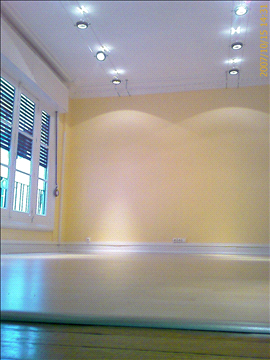
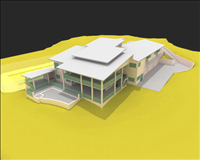

TODA SU OBRA EN UN SOLO CONTRATO


Una de las caracteristicas más representativas de la empresa es el total compromiso de su equipo en la satisfacción de todas las necesidades del cliente. Esta filosofía queda acreditada por la permanente presencia y dedicación de la gerencia y dirección técnica en el desarrollo de todos los trabajos, garantizando la mejor calidad en el servicio para satisfacción y tranquilidad de nuestros clientes.El equipo de SEGRESCO integra:
- Dirección técnica y gerencia
- Asesoria técnica (Arquitectura e Ingeniería)
- Especialistas en instalaciones y equipos
- Equipo de obra, montaje y trabajo
SEGRESCO desarrolla habitualmente su actividad en la Comunidad de Madrid y alrededores. Sin embargo y en casos singulares, tiene la capacidad para realizar trabajos dentro del ámbito nacional.